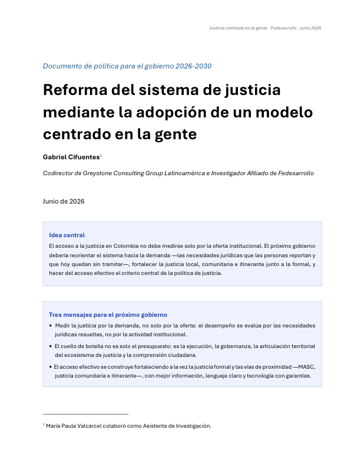
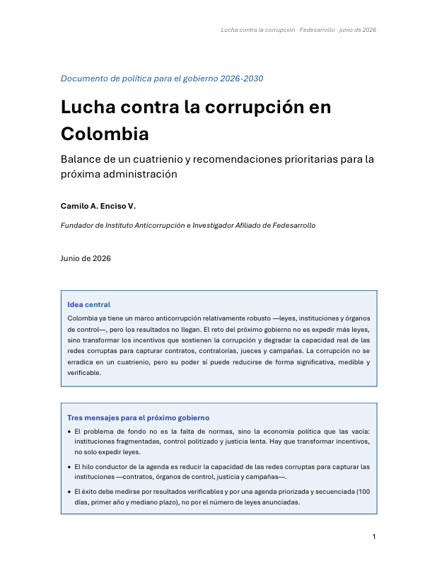
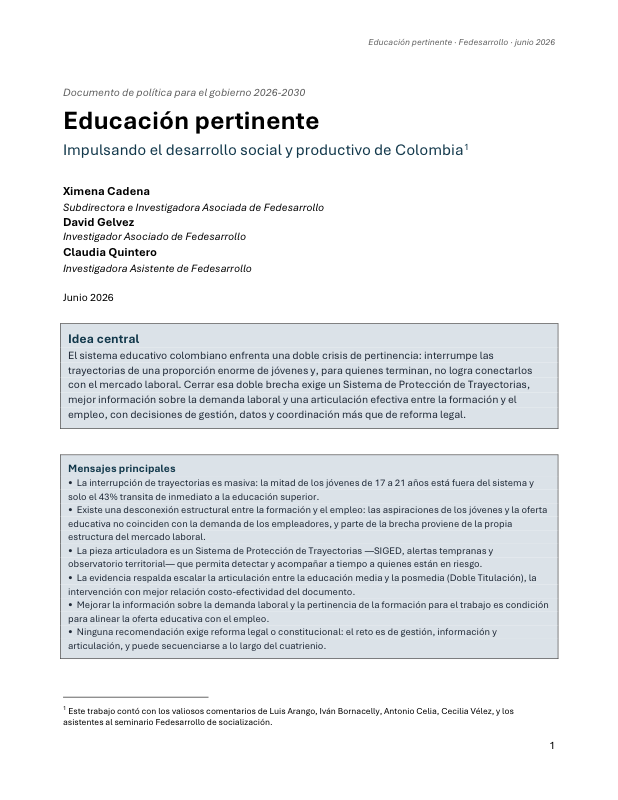

Crimen organizado en Colombia
Diagnóstico, prioridades y hoja de ruta para reducir la capacidad del crimen organizado de matar, gobernar territorios, extorsionar, reclutar, corromper y lavar rentas ilícitas.
Diagnósticos, prioridades y hojas de ruta para los principales retos del próximo gobierno. Cada tema incluye un Documento de Política completo y una Nota de Política breve.
Diagnóstico, prioridades y hoja de ruta para reducir la capacidad del crimen organizado de matar, gobernar territorios, extorsionar, reclutar, corromper y lavar rentas ilícitas.

Reorientar el sistema de justicia hacia la demanda —las necesidades jurídicas que hoy quedan sin tramitar— y fortalecer la justicia local, comunitaria e itinerante.

El reto no es expedir más leyes, sino transformar los incentivos que sostienen la corrupción y degradar la capacidad de captura de las redes corruptas.

Colombia enfrenta el riesgo simultáneo de desabastecimiento de electricidad y gas; un choque en 2026 y una reforma hasta 2030 pueden evitar el colapso y reactivar la inversión.

El sistema educativo interrumpe las trayectorias de demasiados jóvenes y no conecta con el empleo a quienes terminan. Cerrar esa doble brecha es un reto de gestión, datos y articulación, no de nuevas leyes.

El licenciamiento ambiental y la consulta previa frenan la infraestructura estratégica por falta de reglas claras y ausencia del Estado, no por exceso de protección. La salida: que el Estado retome el liderazgo.

Colombia no necesita desmontar su sistema de salud, sino corregir con urgencia su financiamiento, incentivos y gobernanza: garantizar recursos suficientes, mejorar la calidad y reducir las barreras de acceso.